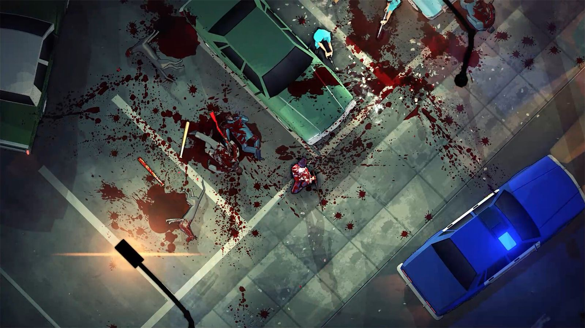

Juego indie al estilo Hotline Miami, esa saga de acción frenética vista desde arriba donde un solo golpe te mata, en la que manejas a un tipo puesto hasta las trancas de estupefacientes que se dedica a matar todo lo que pilla por delante. Es un juego brutal en todos los sentidos, con una jugabilidad de lo más entretenida y satisfactoria que he probado recientemente. Un amigo me recomendó jugar a la demo hace unos meses y fue amor a primera vista, era definitivamente mi tipo de juego.
Lo que más me llamó la atención de aquella demo es su ambientación y el estilo tan único que tiene el juego a la hora de narrar la historia, acompañado de la magnífica música compuesta por Arturo Riera. El juego se sitúa en el Las Vegas de los años 70, con una ambientación noir psicodélica, jazz de fondo y mucha, mucha droga de por medio. La banda sonora me ha encantado, es una verdadera delicia para los oídos. Me han sorprendido mucho las actuaciones de voz, el uso de los subtítulos para dar una narración original y los planos de cámara durante las cinemáticas. Lo hacen de forma excelente, de verdad.
Acción frenética donde un error te mata
El juego lo defino como un caramelito con mucho ácido de por medio. La jugabilidad es de lo más frenético que veréis en un videojuego, donde un error se castiga con la muerte. Está dividido en niveles de duración corta en los que tienes que acabar con todo el que esté presente. Para conseguirlo puedes hacer uso de todo tipo de armas, tanto cuerpo a cuerpo como a distancia.
El tiroteo me ha encantado, debe de ser por los efectos de sonido o por las partículas al disparar. También puedes hacer ejecuciones, deslizarte, empujar objetos y usar habilidades especiales como la teletransportación, el control mental, correr más rápido o desarmar al instante a los enemigos. Visualmente es muy impactante. Le das un barrotazo a un enemigo, sale sangre por todos lados y el cadáver queda hecho un cromo. A eso hay que añadirle un sistema de físicas y de ragdoll excelentes, es decir, cuerpos que se desploman de forma realista al recibir el impacto.

Dos horas y mucha rejugabilidad
El juego es muy corto, en dos horas más o menos lo tienes, pero tiene mucha rejugabilidad. Al pasártelo desbloqueas el modo difícil, donde los enemigos reaccionan más rápido. Además, los niveles tienen un diseño procedural con semillas, lo que ayuda a que cada partida sea completamente diferente a la anterior, al menos en cuanto a la distribución de los enemigos y las salas. También te permite tocar una serie de opciones para personalizar la partida, como armas y enemigos aleatorios, el doble de vida o un límite de tiempo.
En conclusión, Jackal es brutalmente entretenido con un estilo de lo más único que personalmente me ha enamorado. Sin tener una historia novedosa o especialmente intrigante, la forma en la que se narra hace que gane muchos puntos. Si os gustan los juegos frenéticos de matar a todo lo que se menea de la forma más brutal posible, con un arsenal de armas amplísimo, este es vuestro juego. Recomendadísimo.
Lo mejor
- Una jugabilidad frenética y enormemente satisfactoria.
- La banda sonora de Arturo Riera y la ambientación noir de Las Vegas.
- Físicas, ragdoll y efectos de disparo excelentes.
- Mucha rejugabilidad gracias al diseño procedural y a las opciones de partida.
Lo peor
- La historia no aporta nada especialmente novedoso.
- Dos horas de campaña se quedan cortas si no rejuegas.
Desglose de puntuación
Veredicto
Dos horas de acción brutal y frenética con una ambientación noir irresistible y una banda sonora sobresaliente. Corto, pero con rejugabilidad de sobra.